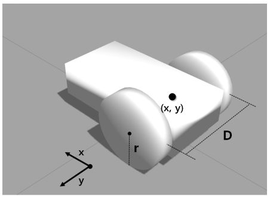
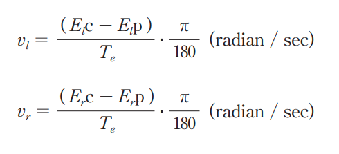
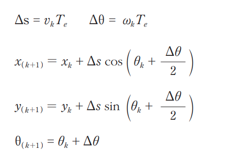

Basic Features
1. Map
Having an accurate and detailed map is essential when we are navigating. From the start, a navigation system may be equipped with a detailed map and be periodically updated for the user. But when it comes to mobile robots, the environment mappings such as a living space or a room, are not done and must be done by the robot itself.
Simultaneous Localization and Mapping (SLAM) is a method which lets the robot create a map with little to no intervention from a human being. The SLAM method will be discussed in detail later in the section.
1. Pose of Robot
The next thing our robot must be able to do is measure and estimate its pose (position and orientation). Modern cars utilize GPS systems to estimate the pose of the car, but for smaller applications such as a small service robot within a confined room, a GPS system would yield too much error margins and be too costly. We need to have a method that is both cost effective and accurate.
The current most effectinve and widely used indoor post estimation method is called the dead reckoning. It is a relative position and orientation estimation method that can be paired with relatively cheap sensor. The position is calculated by the rotation of the wheels and the inertial error margins are counted for with sensors such as IMU.
Within our first robot control examples. we saw that our pose information was defined as (x, y, z, w) within the ROS. This is a positional representation that is in quaternion form which allows for more detailed positional information. refer to http://docs.ros.org/en/api/geometry_msgs/html/msg/Pose.html for more information.
For startersm we would need the center X, Y information of our robot as well as the wheel-to-wheel distance in D, and wheel radius for dead reckoning.
{kind=link}
Assuming our robot has traveled a short distance for a T amount of time, with each wheel reporting the amount of motor rotation done in a encoded value, we would first calculate the rotational speed of each wheels.
{kind=link}
With the angular velocity of the wheels, we can calculate the linear velocity (v_k) and the angular velocity (w_k) of our robot.

With these velocity values we are able to refer our positional value k+1 (where k is our initial position).
{kind=link}
{kind=link}
Sensing
In order to negate the inertial error made by the pose calculation as well as obstacle detection requires the robot to have sensors. Our zetabot include laser-based distance sensor called the LIDAR.
Path Calculation and Driving
The last essential basic feature for our navigation is to calcualte and travel the optimal route to the destination. There are myriads of different algorithms all unique and suitable for different applications, but for our application, we will be using an algorithm named the particle filter. This algorithm will be further explained within this section.